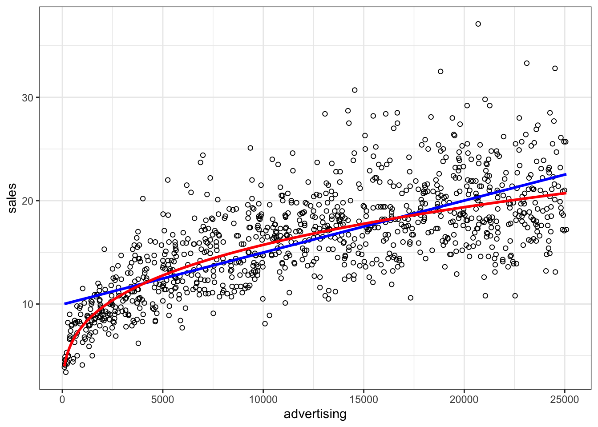

6 Supervised learning
6.1 Linear regression
6.1.1 Correlation
Before we start with regression analysis, we will review the basic concept of correlation first. Correlation helps us to determine the degree to which the variation in one variable, X, is related to the variation in another variable, Y.
6.1.1.1 Correlation coefficient
The correlation coefficient summarizes the strength of the linear relationship between two metric (interval or ratio scaled) variables. Let’s consider a simple example. Say you conduct a survey to investigate the relationship between the attitude towards a shop and the duration of being of its customer. The “Attitude” variable can take values between 1 (very unfavorable) and 12 (very favorable), and the “Duration” is measured in months. Let’s further assume for this example that the attitude measurement represents an interval scale (although it is usually not realistic to assume that the scale points on an itemized rating scale have the same distance). To keep it simple, let’s further assume that you only asked 12 people. We can create a short data set like this:
library(psych)
attitude <- c(6, 9, 8, 3, 10, 4, 5, 2, 11, 9, 10, 2)
duration <- c(10, 12, 12, 4, 12, 6, 8, 2, 18, 9, 17,
2)
att_data <- data.frame(attitude, duration)
att_data <- att_data[order(-attitude), ]
att_data$respodentID <- c(1:12)
str(att_data)## 'data.frame': 12 obs. of 3 variables:
## $ attitude : num 11 10 10 9 9 8 6 5 4 3 ...
## $ duration : num 18 12 17 12 9 12 10 8 6 4 ...
## $ respodentID: int 1 2 3 4 5 6 7 8 9 10 ...## vars n mean sd median trimmed mad min max range skew kurtosis
## attitude 1 12 6.58 3.32 7.0 6.6 4.45 2 11 9 -0.14 -1.74
## duration 2 12 9.33 5.26 9.5 9.2 4.45 2 18 16 0.10 -1.27
## se
## attitude 0.96
## duration 1.52## attitude duration respodentID
## 9 11 18 1
## 5 10 12 2
## 11 10 17 3
## 2 9 12 4
## 10 9 9 5
## 3 8 12 6
## 1 6 10 7
## 7 5 8 8
## 6 4 6 9
## 4 3 4 10
## 8 2 2 11
## 12 2 2 12Let’s look at the data first. The following graph shows the individual data points for the “duration” variable, where the y-axis shows the duration of residency in years and the x-axis shows the respondent ID. The blue horizontal line represents the mean of the variable (9.33) and the vertical lines show the distance of the individual data points from the mean.
Figure 1.3: Scores for duration of residency variable
You can see that there are some respondents that have been the store’s customers longer than average and some - shorter than average. Let’s do the same for the second variable (“Attitude”). Again, the y-axis shows the observed scores for this variable and the x-axis shows the respondent ID.
Figure 1.4: Scores for attitude variable
Again, we can see that some respondents have an above average attitude towards the store (more favorable) and some respondents have a below average attitude. Let’s combine both variables in one graph now to see if there is some co-movement:
Figure 5.1: Scores for attitude and duration of residency variables
We can see that there is indeed some co-movement here. The variables covary because respondents who have an above (below) average attitude towards the store also appear to have been its customers for an above (below) average amount of time and vice versa. Correlation helps us to quantify this relationship. Before you proceed to compute the correlation coefficient, you should first look at the data. We usually use a scatterplot to visualize the relationship between two metric variables:

Figure 1.5: Scatterplot for durationand attitute variables
How can we compute the correlation coefficient? Remember that the variance measures the average deviation from the mean of a variable:
\[\begin{equation} \begin{split} s_x^2&=\frac{\sum_{i=1}^{N} (X_i-\overline{X})^2}{N-1} \\ &= \frac{\sum_{i=1}^{N} (X_i-\overline{X})*(X_i-\overline{X})}{N-1} \end{split} \tag{6.1} \end{equation}\]
When we consider two variables, we multiply the deviation for one variable by the respective deviation for the second variable:
\((X_i-\overline{X})*(Y_i-\overline{Y})\)
This is called the cross-product deviation. Then we sum the cross-product deviations:
\(\sum_{i=1}^{N}(X_i-\overline{X})*(Y_i-\overline{Y})\)
… and compute the average of the sum of all cross-product deviations to get the covariance:
\[\begin{equation} Cov(x, y) =\frac{\sum_{i=1}^{N}(X_i-\overline{X})*(Y_i-\overline{Y})}{N-1} \tag{6.2} \end{equation}\]
You can easily compute the covariance manually as follows
x <- att_data$duration
x_bar <- mean(att_data$duration)
y <- att_data$attitude
y_bar <- mean(att_data$attitude)
N <- nrow(att_data)
cov <- (sum((x - x_bar) * (y - y_bar)))/(N - 1)
cov## [1] 16.333333Or you simply use the built-in cov() function:
## [1] 16.333333A positive covariance indicates that as one variable deviates from the mean, the other variable deviates in the same direction. A negative covariance indicates that as one variable deviates from the mean (e.g., increases), the other variable deviates in the opposite direction (e.g., decreases).
However, the size of the covariance depends on the scale of measurement. Larger scale units will lead to larger covariance. To overcome the problem of dependence on measurement scale, we need to convert the covariance to a standard set of units through standardization by dividing the covariance by the standard deviation (similar to how we compute z-scores).
With two variables, there are two standard deviations. We simply multiply the two standard deviations. We then divide the covariance by the product of the two standard deviations to get the standardized covariance, which is known as a correlation coefficient r:
\[\begin{equation} r=\frac{Cov_{xy}}{s_x*s_y} \tag{6.3} \end{equation}\]
This is known as the product moment correlation (r) and it is straight-forward to compute:
## [1] 0.93607782Or you could just use the cor() function:
## attitude duration
## attitude 1.00000000 0.93607782
## duration 0.93607782 1.00000000The properties of the correlation coefficient (‘r’) are:
- ranges from -1 to + 1
- +1 indicates perfect linear relationship
- -1 indicates perfect negative relationship
- 0 indicates no linear relationship
- ± .1 represents small effect
- ± .3 represents medium effect
- ± .5 represents large effect
6.1.1.2 Significance testing
How can we determine if our two variables are significantly related? To test this, we denote the population moment correlation ρ. Then we test the null of no relationship between variables:
\[H_0:\rho=0\] \[H_1:\rho\ne0\]
The test statistic is:
\[\begin{equation} t=\frac{r*\sqrt{N-2}}{\sqrt{1-r^2}} \tag{6.4} \end{equation}\]
It has a t distribution with n - 2 degrees of freedom. Then, we follow the usual procedure of calculating the test statistic and comparing the test statistic to the critical value of the underlying probability distribution. If the calculated test statistic is larger than the critical value, the null hypothesis of no relationship between X and Y is rejected.
## [1] 8.4144314## [1] 2.2281389## [1] 0.0000075451612Or you can simply use the cor.test() function, which also produces the 95% confidence interval:
cor.test(att_data$attitude, att_data$duration, alternative = "two.sided",
method = "pearson", conf.level = 0.95)##
## Pearson's product-moment correlation
##
## data: att_data$attitude and att_data$duration
## t = 8.41443, df = 10, p-value = 0.0000075452
## alternative hypothesis: true correlation is not equal to 0
## 95 percent confidence interval:
## 0.78260411 0.98228152
## sample estimates:
## cor
## 0.93607782To determine the linear relationship between variables, the data only needs to be measured using interval scales. If you want to test the significance of the association, the sampling distribution needs to be normally distributed (we usually assume this when our data are normally distributed or when N is large). If parametric assumptions are violated, you should use non-parametric tests:
- Spearman’s correlation coefficient: requires ordinal data and ranks the data before applying Pearson’s equation.
- Kendall’s tau: use when N is small or the number of tied ranks is large.
cor.test(att_data$attitude, att_data$duration, alternative = "two.sided",
method = "spearman", conf.level = 0.95)##
## Spearman's rank correlation rho
##
## data: att_data$attitude and att_data$duration
## S = 14.1969, p-value = 0.0000021833
## alternative hypothesis: true rho is not equal to 0
## sample estimates:
## rho
## 0.95036059cor.test(att_data$attitude, att_data$duration, alternative = "two.sided",
method = "kendall", conf.level = 0.95)##
## Kendall's rank correlation tau
##
## data: att_data$attitude and att_data$duration
## z = 3.90948, p-value = 0.000092496
## alternative hypothesis: true tau is not equal to 0
## sample estimates:
## tau
## 0.89602867Report the results:
A Pearson product-moment correlation coefficient was computed to assess the relationship between the duration of being a customer of a store and the attitude toward this store. There was a positive correlation between the two variables, r = 0.936, n = 12, p < 0.05. A scatterplot summarizes the results (Figure XY).
A note on the interpretation of correlation coefficients:
As we have already seen in Chapter 1, correlation coefficients give no indication of the direction of causality. In our example, we can conclude that the attitude toward the store is more positive as the months of being a customer increase. However, we cannot say that the duration causes the attitudes to be more positive. There are two main reasons for caution when interpreting correlations:
- Third-variable problem: there may be other unobserved factors that affect both the ‘attitude’ and the ‘duration’ variables
- Direction of causality: Correlations say nothing about which variable causes the other to change (reverse causality: attitudes may just as well cause the duration variable).
6.1.2 Regression analysis
Correlations measure relationships between variables (i.e., how much two variables covary). Using regression analysis we can predict the outcome of a dependent variable (Y) from one or more independent variables (X). For example, we could be interested in how many products will we will sell if we increase the advertising expenditures by 1000 Euros? In regression analysis, we fit a model to our data and use it to predict the values of the dependent variable from one predictor variable (bivariate regression) or several predictor variables (multiple regression). The following table shows a comparison of correlation and regression analysis:
| Correlation | Regression | |
|---|---|---|
| Estimated coefficient | Coefficient of correlation (bounded between -1 and +1) | Regression coefficient (not bounded a priori) |
| Interpretation | Linear association between two variables; Association is bidirectional | (Linear) relation between one or more independent variables and dependent variable; Relation is directional |
| Role of theory | Theory neither required nor testable | Theory required and testable |
6.1.2.1 Simple linear regression
In simple linear regression, we assess the relationship between one dependent (regressand) and one independent (regressor) variable. The goal is to fit a line through a scatterplot of observations in order to find the line that best describes the data (scatterplot).
Suppose you are a marketing research analyst at a big retail group and your task is to suggest, on the basis of historical data, a marketing plan for the next year that will maximize product sales. The product in question is beer brand Budweiser. The data set that is available to you includes information on the sales of Budweiser move_ounce (in ounces, FYI: 1 oz = 29,57 ml), prices price_ounce (in dollars per ounce), and several other variables: bonus buy - a price reduction if customers buy a certain quantity of a product (sale_B), price reduction in % (sale_S), and others. Let’s load and inspect the data first:
regression <- read.table("https://raw.githubusercontent.com/dariayudaeva/RMA2024/main/data/bud_store102.csv",
sep = ",", header = TRUE) # read in data
str(regression)## 'data.frame': 220 obs. of 22 variables:
## $ store : int 102 102 102 102 102 102 102 102 102 102 ...
## $ brand_id : int 26 26 26 26 26 26 26 26 26 26 ...
## $ brand : chr "Budweiser" "Budweiser" "Budweiser" "Budweiser" ...
## $ week : int 91 92 93 94 95 96 97 98 99 100 ...
## $ move_ounce : num 41704 44212 28748 26169 35581 ...
## $ price_ounce : num 4.67 4.58 4.58 4.53 4.54 ...
## $ sale_B : num 0.133 0.133 0.125 0 0 ...
## $ sale_C : int 0 0 0 0 0 0 0 0 0 0 ...
## $ sale_S : num 0 0 0 0 0 0 0 0 0 0 ...
## $ summove_ounce : num 158871900 158871900 158871900 158871900 158871900 ...
## $ nweeks : int 220 220 220 220 220 220 220 220 220 220 ...
## $ mean_marketshare: num 0.0893 0.0893 0.0893 0.0893 0.0893 ...
## $ sharerank : int 3 3 3 3 3 3 3 3 3 3 ...
## $ priclow : int 0 0 0 0 0 0 0 0 0 0 ...
## $ pricmed : int 1 1 1 1 1 1 1 1 1 1 ...
## $ prichigh : int 0 0 0 0 0 0 0 0 0 0 ...
## $ logprice_ounce : num 1.54 1.52 1.52 1.51 1.51 ...
## $ logmove_ounce : num 10.6 10.7 10.3 10.2 10.5 ...
## $ saledummy_B : int 1 1 1 0 0 0 0 0 0 0 ...
## $ saledummy_C : int 0 0 0 0 0 0 0 0 0 0 ...
## $ saledummy_S : int 0 0 0 0 0 0 0 0 0 0 ...
## $ promoweek : int 91 92 93 NA NA NA NA NA NA NA ...regression$store <- as.factor(regression$store) #convert grouping variable to factor
regression$brand_id <- as.factor(regression$brand_id) #convert grouping variable to factor
regression$saledummy_B <- as.factor(regression$saledummy_B) #convert grouping variable to factor
regression$saledummy_C <- as.factor(regression$saledummy_C) #convert grouping variable to factor
regression$saledummy_S <- as.factor(regression$saledummy_S) #convert grouping variable to factor
head(regression)## vars n mean sd median trimmed mad min max range
## sales 1 200 193.20 80.70 200.00 192.69 88.96 10.0 360.00 350.00
## adspend 2 200 614.41 485.66 531.92 560.81 489.09 9.1 2271.86 2262.76
## airplay 3 200 27.50 12.27 28.00 27.46 11.86 0.0 63.00 63.00
## starpower 4 200 6.77 1.40 7.00 6.88 1.48 1.0 10.00 9.00
## genre* 5 200 2.40 0.79 3.00 2.50 0.00 1.0 3.00 2.00
## country* 6 200 1.17 0.38 1.00 1.09 0.00 1.0 2.00 1.00
## skew kurtosis se
## sales 0.04 -0.72 5.71
## adspend 0.84 0.17 34.34
## airplay 0.06 -0.09 0.87
## starpower -1.27 3.56 0.10
## genre* -0.83 -0.91 0.06
## country* 1.74 1.05 0.03As stated above, regression analysis may be used to relate a quantitative response (“dependent variable”) to one or more predictor variables (“independent variables”). In a simple linear regression, we have one dependent and one independent variable and we regress the dependent variable on the independent variable.
Here are a few important questions that we might seek to address based on the data:
- Is there a relationship between prices and sales?
- How strong is the relationship between prices and sales?
- Which other variables contribute to sales?
- How accurately can we estimate the effect of each variable on sales?
- How accurately can we predict future sales?
- Is the relationship linear?
- Is there synergy among the advertising activities?
We may use linear regression to answer these questions. We will see later that the interpretation of the results strongly depends on the goal of the analysis - whether you would like to simply predict an outcome variable or you would like to explain the causal effect of the independent variable on the dependent variable (see Chapter 1). Let’s start with the first question and investigate the relationship between advertising and sales.
6.1.2.1.1 Estimating the coefficients
A simple linear regression model only has one predictor and can be written as:
\[\begin{equation} Y=\beta_0+\beta_1X+\epsilon \tag{6.5} \end{equation}\]
In our specific context, let’s consider only the influence of prices on sales for now:
\[\begin{equation} Sales=\beta_0+\beta_1*price+\epsilon \tag{6.6} \end{equation}\]
The word “price” represents data on advertising expenditures that we have observed and β1 (the “slope”“) represents the unknown relationship between prices and sales. It tells you by how much sales will increase or decrease for an additional dollar added to price. β0 (the”intercept”) is the number of sales we would expect if the price is set to 0. Note that the last assumption is highly theoretical: in the majority of real world scenarios, we never have such variables as prices, advertising expenditures, kilometers to the nearest store set to 0. Hence, it is incorrect to interpret the intercept like this. Together, β0 and β1 represent the model coefficients or parameters. The error term (ε) captures everything that we miss by using our model, including, (1) misspecifications (the true relationship might not be linear), (2) omitted variables (other variables might drive sales), and (3) measurement error (our measurement of the variables might be imperfect).
Once we have used our training data to produce estimates for the model coefficients, we can predict future sales on the basis of a particular value of price by computing:
\[\begin{equation} \hat{Sales}=\hat{\beta_0}+\hat{\beta_1}*price \tag{6.7} \end{equation}\]
We use the hat symbol, ^, to denote the estimated value for an unknown parameter or coefficient, or to denote the predicted value of the response (sales). In practice, β0 and β1 are unknown and must be estimated from the data to make predictions. In the case of our pricing example, the data set consists of the prices and product sales for 220 weeks (n = 220). Our goal is to obtain coefficient estimates such that the linear model fits the available data well. In other words, we fit a line through the scatterplot of observations and try to find the line that best describes the data. The following graph shows the scatterplot for our data, where the black line shows the regression line. The grey vertical lines shows the difference between the predicted values (the regression line) and the observed values. This difference is referred to as the residuals (“e”).
Figure 1.14: Ordinary least squares (OLS)
The estimation of the regression function is based on the idea of the method of least squares (OLS = ordinary least squares). The first step is to calculate the residuals by subtracting the observed values from the predicted values.
\(e_i = Y_i-(\beta_0+\beta_1X_i)\)
This difference is then minimized by minimizing the sum of the squared residuals:
\[\begin{equation} \sum_{i=1}^{N} e_i^2= \sum_{i=1}^{N} [Y_i-(\beta_0+\beta_1X_i)]^2\rightarrow min! \tag{6.8} \end{equation}\]
ei: Residuals (i = 1,2,…,N)
Yi: Values of the dependent variable (i = 1,2,…,N)
β0: Intercept
β1: Regression coefficient / slope parameters
Xni: Values of the nth independent variables and the ith observation
N: Number of observations
This is also referred to as the residual sum of squares (RSS). Now we need to choose the values for β0 and β1 that minimize RSS. So how can we derive these values for the regression coefficient? The equation for β1 is given by:
\[\begin{equation} \hat{\beta_1}=\frac{COV_{XY}}{s_x^2} \tag{6.9} \end{equation}\]
The exact mathematical derivation of this formula is beyond the scope of this script, but the intuition is to calculate the first derivative of the squared residuals with respect to β1 and set it to zero, thereby finding the β1 that minimizes the term. Using the above formula, you can easily compute β1 using the following code:
## [1] -405.2959## [1] 0.04473198## [1] -9060.539The interpretation of β1 is as follows:
For every extra dollar increase of the price, sales can be expected to decrease by -9060.539 oz, which is around 270 liters.
Using the estimated coefficient for β1, it is easy to compute β0 (the intercept) as follows:
\[\begin{equation} \hat{\beta_0}=\overline{Y}-\hat{\beta_1}\overline{X} \tag{6.10} \end{equation}\]
The R code for this is:
## [1] 63950.63You may also verify this based on a scatterplot of the data. The following plot shows the scatterplot including the regression line, which is estimated using OLS.
ggplot(regression, mapping = aes(price_ounce, move_ounce)) +
geom_point(shape = 1) + geom_smooth(method = "lm",
fill = "blue", alpha = 0.1) + labs(x = "Price ($ per oz)",
y = "Sales (oz)") + theme_bw()Figure 1.17: Scatterplot
The slope coefficient (β1) tells you by how much sales (on the y-axis) would decrease if the price (on the x-axis) is increased by one unit ($).
6.1.2.1.2 Significance testing
In a next step, we assess if the effect of prices on sales is statistically significant. This means that we test the null hypothesis H0: “There is no relationship between prices and sales” versus the alternative hypothesis H1: “The is some relationship between prices and sales”. Or, to state this formally:
\[H_0:\beta_1=0\] \[H_1:\beta_1\ne0\]
How can we test if the effect is statistically significant? Recall the generalized equation to derive a test statistic:
\[\begin{equation} test\ statistic = \frac{effect}{error} \tag{6.11} \end{equation}\]
The effect is given by the β1 coefficient in this case. To compute the test statistic, we need to come up with a measure of uncertainty around this estimate (the error). This is because we use information from a sample to estimate the least squares line to make inferences regarding the regression line in the entire population. Since we only have access to one sample, the regression line will be slightly different every time we take a different sample from the population. This is sampling variation and it is perfectly normal! It just means that we need to take into account the uncertainty around the estimate, which is achieved by the standard error. Thus, the test statistic for our hypothesis is given by:
\[\begin{equation} t = \frac{\hat{\beta_1}}{SE(\hat{\beta_1})} \tag{6.12} \end{equation}\]
After calculating the test statistic, we compare its value to the values that we would expect to find if there was no effect based on the t-distribution. In a regression context, the degrees of freedom are given by N - p - 1 where N is the sample size and p is the number of predictors. In our case, we have 220 observations and one predictor. Thus, the degrees of freedom is 220 - 1 - 1 = 218. In the regression output below, R provides the exact probability of observing a t value of this magnitude (or larger) if the null hypothesis was true. This probability is the p-value. A small p-value indicates that it is unlikely to observe such a substantial association between the predictor and the outcome variable due to chance in the absence of any real association between the predictor and the outcome.
To estimate the regression model in R, you can use the lm() function. Within the function, you first specify the dependent variable (“move_ounce”) and independent variable (“price_ounce”) separated by a ~ (tilde). As mentioned previously, this is known as formula notation in R. The data = regression argument specifies that the variables come from the data frame named “regression”. Strictly speaking, you use the lm() function to create an object called “sales_reg,” which holds the regression output. You can then view the results using the summary() function:
sales_reg <- lm(move_ounce ~ price_ounce, data = regression) #estimate linear model
summary(sales_reg) #summary of results##
## Call:
## lm(formula = move_ounce ~ price_ounce, data = regression)
##
## Residuals:
## Min 1Q Median 3Q Max
## -11439 -4798 -1539 2744 50733
##
## Coefficients:
## Estimate Std. Error t value Pr(>|t|)
## (Intercept) 63951 11892 5.377 0.000000194 ***
## price_ounce -9060 2434 -3.723 0.00025 ***
## ---
## Signif. codes: 0 '***' 0.001 '**' 0.01 '*' 0.05 '.' 0.1 ' ' 1
##
## Residual standard error: 7617 on 218 degrees of freedom
## Multiple R-squared: 0.05979, Adjusted R-squared: 0.05548
## F-statistic: 13.86 on 1 and 218 DF, p-value: 0.0002504Note that the estimated coefficients for β0 (63950.625) and β1 (-9060.539) correspond to the results of our manual computation above. The associated t-values and p-values are given in the output. The t-values are larger than the critical t-values for the 95% confidence level, since the associated p-values are smaller than 0.05. In case of the coefficient for β1, this means that the probability of an association between the prices and sales of the observed magnitude (or larger) is smaller than 0.05, if the value of β1 was, in fact, 0. This finding leads us to reject the null hypothesis of no association between prices and sales.
The coefficients associated with the respective variables represent point estimates. To obtain a better understanding of the range of values that the coefficients could take, it is helpful to compute confidence intervals. A 95% confidence interval is defined as a range of values such that with a 95% probability, the range will contain the true unknown value of the parameter. For example, for β1, the confidence interval can be computed as.
\[\begin{equation} CI = \hat{\beta_1}\pm(t_{1-\frac{\alpha}{2}}*SE(\beta_1)) \tag{6.13} \end{equation}\]
It is easy to compute confidence intervals in R using the confint() function. You just have to provide the name of you estimated model as an argument:
## 2.5 % 97.5 %
## (Intercept) 40511.67 87389.58
## price_ounce -13856.72 -4264.36For our model, the 95% confidence interval for β0 is [40511.67,87389.58], and the 95% confidence interval for β1 is [-13856.72,-4264.36]. Thus, we can conclude that when we do not spend any money on advertising, sales will be somewhere between 40512 and 87390 units on average. In addition, for each increase in advertising expenditures by one Euro, there will be an average increase in sales of between -13856.72 and -4264.36. If you revisit the graphic depiction of the regression model above, the uncertainty regarding the intercept and slope parameters can be seen in the confidence bounds (blue area) around the regression line.
6.1.2.1.3 Assessing model fit
Once we have rejected the null hypothesis in favor of the alternative hypothesis, the next step is to investigate how well the model represents (“fits”) the data. How can we assess the model fit?
- First, we calculate the fit of the most basic model (i.e., the mean)
- Then, we calculate the fit of the best model (i.e., the regression model)
- A good model should fit the data significantly better than the basic model
- R2: Represents the percentage of the variation in the outcome that can be explained by the model
- The F-ratio measures how much the model has improved the prediction of the outcome compared to the level of inaccuracy in the model
Similar to ANOVA, the calculation of model fit statistics relies on estimating the different sum of squares values. SST is the difference between the observed data and the mean value of Y (aka. total variation). In the absence of any other information, the mean value of Y (\(\overline{Y}\)) represents the best guess on where a particular observation \(Y_{i}\) at a given level of advertising will fall:
\[\begin{equation} SS_T= \sum_{i=1}^{N} (Y_i-\overline{Y})^2 \tag{6.14} \end{equation}\]
The following graph shows the total sum of squares:
Figure 1.20: Total sum of squares
Based on our linear model, the best guess about the sales level at a given level of prices is the predicted value \(\hat{Y}_i\). The model sum of squares (SSM) therefore has the mathematical representation:
\[\begin{equation} SS_M= \sum_{i=1}^{N} (\hat{Y}_i-\overline{Y})^2 \tag{6.15} \end{equation}\]
The model sum of squares represents the improvement in prediction resulting from using the regression model rather than the mean of the data. The following graph shows the model sum of squares for our example:
Figure 1.21: Ordinary least squares (OLS)
The residual sum of squares (SSR) is the difference between the observed data points (\(Y_{i}\)) and the predicted values along the regression line (\(\hat{Y}_{i}\)), i.e., the variation not explained by the model.
\[\begin{equation} SS_R= \sum_{i=1}^{N} ({Y}_{i}-\hat{Y}_{i})^2 \tag{6.16} \end{equation}\]
The following graph shows the residual sum of squares for our example:
Figure 1.22: Ordinary least squares (OLS)
Based on these statistics, we can determine how well the model fits the data as we will see next.
R-squared
The R2 statistic represents the proportion of variance that is explained by the model and is computed as:
\[\begin{equation} R^2= \frac{SS_M}{SS_T} \tag{6.16} \end{equation}\]
It takes values between 0 (very bad fit) and 1 (very good fit). Note that when the goal of your model is to predict future outcomes, a “too good” model fit can pose severe challenges. The reason is that the model might fit your specific sample so well, that it will only predict well within the sample but not generalize to other samples. This is called overfitting and it shows that there is a trade-off between model fit and out-of-sample predictive ability of the model, if the goal is to predict beyond the sample. We will come back to this point later in this chapter.
You can get a first impression of the fit of the model by inspecting the scatter plot as can be seen in the plot below. If the observations are highly dispersed around the regression line (left plot), the fit will be lower compared to a data set where the values are less dispersed (right plot).
Figure 1.23: Good vs. bad model fit
The R2 statistic is reported in the regression output, so you don’t need to compute it manually - but you can do it this way:
r2 <- anova(sales_reg)$"Sum Sq"[1]/(anova(sales_reg)$"Sum Sq"[1] +
anova(sales_reg)$"Sum Sq"[2]) #compute R2
r2## [1] 0.05978855Adjusted R-squared
Due to the way the R2 statistic is calculated, it will never decrease if a new explanatory variable is introduced into the model. This means that every new independent variable either doesn’t change the R2 or increases it, even if there is no real relationship between the new variable and the dependent variable. Hence, one could be tempted to just add as many variables as possible to increase the R2 and thus obtain a “better” model. However, this actually only leads to more noise and therefore a worse model.
To account for this, there exists a test statistic closely related to the R2, the adjusted R2. It can be calculated as follows:
\[\begin{equation} \overline{R^2} = 1 - (1 - R^2)\frac{n-1}{n - k - 1} \tag{6.17} \end{equation}\]
where n is the total number of observations and k is the total number of explanatory variables. The adjusted R2 is equal to or less than the regular R2 and can be negative. It will only increase if the added variable adds more explanatory power than one would expect by pure chance. Essentially, it contains a “penalty” for including unnecessary variables and therefore favors more parsimonious models. As such, it is a measure of suitability, good for comparing different models and is very useful in the model selection stage of a project. In R, the standard lm() function automatically also reports the adjusted R2 as you can see above.
F-test
Similar to the ANOVA, another significance test is the F-test, which tests the null hypothesis:
\[H_0:R^2=0\]
Or, to state it slightly differently:
\[H_0:\beta_1=\beta_2=\beta_3=\beta_k=0\]
This means that we test whether any of the included independent variables has a significant effect on the dependent variable. So far, we have only included one independent variable, but we will extend the set of predictor variables below.
The F-test statistic is calculated as follows:
\[\begin{equation} F=\frac{\frac{SS_M}{k}}{\frac{SS_R}{(n-k-1)}}=\frac{MS_M}{MS_R} \tag{6.16} \end{equation}\]
which has a F distribution with k number of predictors and n degrees of freedom. In other words, you divide the systematic (“explained”) variation due to the predictor variables by the unsystematic (“unexplained”) variation.
The result of the F-test is provided in the regression output as well. However, you might manually compute the F-test using the ANOVA results from the model:
## [1] 13.86274## [1] 3.936143## [1] TRUE6.1.2.1.4 Using the model
After fitting the model, we can use the estimated coefficients to predict sales of Budweiser for different values of prices. Suppose the store plans to set the price per ounce to 2 dollars. How much will it sell? You can easily compute this either by hand:
\[\hat{sales}=63950.6 + (-9060.5)*2=45,829.6\]
… or by extracting the estimated coefficients from the model summary:
prediction <- summary(sales_reg)$coefficients[1, 1] +
summary(sales_reg)$coefficients[2, 1] * 2 # the slope * 2 EUR
prediction## [1] 45829.55The predicted value of the dependent variable is 45,829.6 oz, i.e., the store will sell around 45,829.6 oz (~1,355 liters) of Budweiser.
6.1.2.2 Log-Log transformation
Have a look at the plots above again. You might notice some data specific pattern, making the data points look odd: they are pulled to lower edge of the scatterplot. In this particular case, we’re dealing with different measurement scales of our independent and dependent variables. Moreover, you could also notice how odd the interpretation of the regression coefficients sounds.
It is very rare that in the retailing context, the predictions are made as we did before. The concept that is used instead is familiar to you from the microeconomics course - elasticity is a measure that is used by retail managers and researchers much more often than mere unit changes.
Let’s have a look at the plot again:
ggplot(regression, mapping = aes(price_ounce, move_ounce)) +
geom_point(shape = 1) + geom_smooth(method = "lm",
color = "lavenderblush4", fill = "red", alpha = 0.1) +
labs(x = "Price (ounce)", y = "Sales (ounce)") +
theme_minimal()
The way of obtaining a more reasonable view and interpretation in this case is called “multiplicative modeling”, or log-log transformation (you can find additional details about log-log transformations below with a slightly different motivation and example).
The multiplicative model has the following formal representation:
\[\begin{equation} Y =\beta_0 *X_1^{\beta_1}*X_2^{\beta_2}*...*X_J^{\beta_J}*\epsilon \tag{6.18} \end{equation}\]
This functional form can be linearized by taking the logarithm of both sides of the equation:
\[\begin{equation} log(Y) =log(\beta_0) + \beta_1*log(X_1) + \beta_2*log(X_2) + ...+ \beta_J*log(X_J) + log(\epsilon) \tag{6.19} \end{equation}\]
This means that taking logarithms of both sides of the equation makes linear estimation possible. The above transformation follows from two logarithm rules that we apply here:
- the product rule states that \(log(xy)=log(x)+log(y)\); thus, when taking the logarithm of the right hand side of the multiplicative model, we can write \(log(X_1) + log(X_2)... log(X_J)\) instead of \(log(X_1*X_2*...X_J)\), and
- the power rule states that \(log(x^y) = ylog(x)\); thus, we can write \(\beta*log(X)\) instead of \(X^{\beta}\)
Let’s test how the scatterplot would look like if we use the logarithm of our variables using the log() function instead of the original values.
ggplot(regression, mapping = aes(log(price_ounce),
log(move_ounce))) + geom_point(shape = 1) + geom_smooth(method = "lm",
color = "lavenderblush4", fill = "red", alpha = 0.1) +
labs(x = "Price", y = "Sales") + theme_minimal()You can see how the scales changed, and how the observations got more normally distributed. Hence, we can log-transform our variables and estimate the following equation:
\[\begin{equation} log(sales) = log(\beta_0) + \beta_1*log(price) + log(\epsilon) \tag{6.20} \end{equation}\]
Now, let’s estimate a new regression by applying log() function to both sales and prices:
sales_reg2 <- lm(log(move_ounce) ~ log(price_ounce),
data = regression)
summary(sales_reg2) #remember that now the interpretation changed##
## Call:
## lm(formula = log(move_ounce) ~ log(price_ounce), data = regression)
##
## Residuals:
## Min 1Q Median 3Q Max
## -0.82525 -0.22395 -0.02847 0.18184 1.31565
##
## Coefficients:
## Estimate Std. Error t value Pr(>|t|)
## (Intercept) 13.3539 0.7961 16.774 < 0.0000000000000002 ***
## log(price_ounce) -2.2252 0.5022 -4.431 0.0000148 ***
## ---
## Signif. codes: 0 '***' 0.001 '**' 0.01 '*' 0.05 '.' 0.1 ' ' 1
##
## Residual standard error: 0.3237 on 218 degrees of freedom
## Multiple R-squared: 0.08262, Adjusted R-squared: 0.07842
## F-statistic: 19.63 on 1 and 218 DF, p-value: 0.00001485In this example, you would interpret the coefficient as follows: A 1% increase in price leads to a 2.23% decrease in sales. Hence, the interpretation is in proportional terms and no longer in units. This means that the coefficients in a log-log model can be directly interpreted as elasticities, which also makes communication easier. We can generally also inspect the R2 statistic to see that the model fit has increased compared to the linear specification (i.e., R2 has increased to 0.08 from 0.06). However, please note that the variables are now measured on a different scale, which means that the model fit in theory is not directly comparable.
6.1.2.3 Multiple linear regression
Multiple linear regression is a statistical technique that simultaneously tests the relationships between two or more independent variables and an interval-scaled dependent variable. The general form of the equation is given by:
\[\begin{equation} Y=(\beta_0+\beta_1*X_1+\beta_2*X_2+\beta_n*X_n)+\epsilon \tag{6.5} \end{equation}\]
Again, we aim to find the combination of predictors that correlate maximally with the outcome variable. Note that if you change the composition of predictors, the partial regression coefficient of an independent variable will be different from that of the bivariate regression coefficient. This is because the regressors are usually correlated, and any variation in Y that was shared by X1 and X2 was attributed to X1. The interpretation of the partial regression coefficients is the expected change in Y when X is changed by one unit and all other predictors are held constant.
Let’s extend the previous example. Say, in addition to the influence of price itself, you are interested in estimating the influence of two sales promotion techniques on the amount of Budweiser. The corresponding equation, including bonus buy and price reduction, would then be given by:
\[ Sales=\beta_0+\beta_1*price+\beta_2*bonus\_buy+\beta_3*price\_reduction+\epsilon\]
β1, β2, and β3 represent the unknown relationship between sales and independent variables (price, bonus buy, and price reduction, respectively). The corresponding coefficients tell you by how much sales will change for an additional dollar increase of price (when the other IVs are held constant) and by how much sales will change for an additional unit of price reduction (when price itself and bonus buy are held constant), etc. Thus, we can make predictions about sales using all these variables.
With several predictors, the partitioning of sum of squares is the same as in the bivariate model, except that the model is no longer a 2-D straight line. With two predictors, the regression line becomes a 3-D regression plane. While multiple regression models that have more than two predictors are not as easy to visualize, you may apply the same principles when interpreting the model outcome:
- Total sum of squares (SST) is still the difference between the observed data and the mean value of Y (total variation)
- Residual sum of squares (SSR) is still the difference between the observed data and the values predicted by the model (unexplained variation)
- Model sum of squares (SSM) is still the difference between the values predicted by the model and the mean value of Y (explained variation)
- R measures the multiple correlation between the predictors and the outcome
- R2 is the amount of variation in the outcome variable explained by the model
Estimating multiple regression models is straightforward using the lm() function. You just need to separate the individual predictors on the right hand side of the equation using the + symbol. In addition, as discussed before, we would need to use log-log transformation for our use case, which can be done in multiple regression context as well. Hence, we would specify the model as follows (note that bonus buy and price reduction are already percentages in our data set, i.e., 0.2 value of price reduction is translated as 20% price decrease - hence, we don’t need to take an additional logarithm of it):
\[ log(Sales) =log(\beta_0) + \beta_1*log(Price) + \beta_2*bonus\_buy+\beta_3*price\_reduction+ log(\epsilon) \]
This regression could be estimated as follows:
multiple_sales_reg <- lm(log(move_ounce) ~ log(price_ounce) +
sale_B + sale_S, data = regression) # estimate the model
summary(multiple_sales_reg) #summary of results##
## Call:
## lm(formula = log(move_ounce) ~ log(price_ounce) + sale_B + sale_S,
## data = regression)
##
## Residuals:
## Min 1Q Median 3Q Max
## -0.79604 -0.21487 -0.02693 0.18710 1.29586
##
## Coefficients:
## Estimate Std. Error t value Pr(>|t|)
## (Intercept) 13.3176 0.8110 16.422 < 0.0000000000000002 ***
## log(price_ounce) -2.2207 0.5077 -4.374 0.000019 ***
## sale_B 0.1227 0.1490 0.824 0.4110
## sale_S 3.0326 1.2225 2.481 0.0139 *
## ---
## Signif. codes: 0 '***' 0.001 '**' 0.01 '*' 0.05 '.' 0.1 ' ' 1
##
## Residual standard error: 0.3203 on 216 degrees of freedom
## Multiple R-squared: 0.1103, Adjusted R-squared: 0.0979
## F-statistic: 8.922 on 3 and 216 DF, p-value: 0.00001342The interpretation of the coefficients is as follows:
- price (β1): when price increases by 1%, sales will change by -2.221%
- bonus buy (β2): when bonus buy increases by 1%, sales will change by 0.123%
- price reduction (β3): when the price reduction increases by 1%, sales will change by 3.033%
The associated t-values and p-values are also given in the output. You can see that the p-values are smaller than 0.05 for price and price reduction coefficients, while bonus sale is insignificant. Moreover, the p-value for F-test is smaller than 0.05. This means that if the null hypothesis was true (i.e., there was no effect between the variables and sales), the probability of observing associations of the estimated magnitudes (or larger) is very small (e.g., smaller than 0.05).
Again, to get a better feeling for the range of values that the coefficients could take, it is helpful to compute confidence intervals.
## 2.5 % 97.5 %
## (Intercept) 11.7191819 14.9160122
## log(price_ounce) -3.2213424 -1.2200538
## sale_B -0.1708936 0.4163071
## sale_S 0.6229993 5.4421432What does this tell you? Recall that a 95% confidence interval is defined as a range of values such that with a 95% probability, the range will contain the true unknown value of the parameter. For example, for β3, the confidence interval is [0.6229993,5.4421432]. Thus, although we have computed a point estimate of 3.033 for the effect of price reduction on sales based on our sample, the effect might actually just as well take any other value within this range, considering the sample size and the variability in our data. You could also visualize the output from your regression model including the confidence intervals using the ggstatsplot package as follows:
library(ggstatsplot)
ggcoefstats(x = multiple_sales_reg, title = "Sales predicted by price, bonus buy, and price reduction")
Figure 4.4: Confidence intervals for regression model
The output also tells us that 11.0258688% of the variation can be explained by our model. You may also visually inspect the fit of the model by plotting the predicted values against the observed values. We can extract the predicted values using the predict() function. So let’s create a new variable yhat, which contains those predicted values.
We can now use this variable to plot the predicted values against the observed values. In the following plot, the model fit would be perfect if all points would fall on the diagonal line. The larger the distance between the points and the line, the worse the model fit. In other words, if all points would fall exactly on the diagonal line, the model would perfectly predict the observed values.
ggplot(data = regression, aes(week, log(move_ounce))) +
geom_vline(xintercept = regression$promoweek, colour = "lightgrey") +
geom_line(aes(y = log(move_ounce), colour = "logsales"),
size = 1) + geom_line(aes(y = (logmove_ounce_hat),
colour = "logsales (predicted)"), size = 1) + scale_color_manual(values = c("black",
"gold")) + theme_minimal()Figure 6.1: Model fit
Partial plots
In the context of a simple linear regression (i.e., with a single independent variable), a scatter plot of the dependent variable against the independent variable provides a good indication of the nature of the relationship. If there is more than one independent variable, however, things become more complicated. The reason is that although the scatter plot still show the relationship between the two variables, it does not take into account the effect of the other independent variables in the model. Partial regression plot show the effect of adding another variable to a model that already controls for the remaining variables in the model. In other words, it is a scatterplot of the residuals of the outcome variable and each predictor when both variables are regressed separately on the remaining predictors. In our example, the partial plot would show the effect of adding price as an explanatory variables while controlling for the variation that is explained by sales promotions in both variables (sales and price). Think of it as the purified relationship between price and sales that remains after controlling for other factors. The partial plots can easily be created using the avPlots() function from the car package:

Figure 4.5: Partial plots
6.1.3 Categorical predictors
6.1.3.1 Two categories
Suppose, you wish to investigate the effect of the variable “country” on sales, which is a categorical variable that can only take two levels (i.e., 0 = local artist, 1 = international artist). Categorical variables with two levels are also called binary predictors. It is straightforward to include these variables in your model as “dummy” variables. Dummy variables are factor variables that can only take two values. For our “country” variable, we can create a new predictor variable that takes the form:
\[\begin{equation} x_4 = \begin{cases} 1 & \quad \text{if } i \text{th artist is international}\\ 0 & \quad \text{if } i \text{th artist is local} \end{cases} \tag{6.21} \end{equation}\]
This new variable is then added to our regression equation from before, so that the equation becomes
\[\begin{align} Sales =\beta_0 &+\beta_1*adspend\\ &+\beta_2*airplay\\ &+\beta_3*starpower\\ &+\beta_4*international+\epsilon \end{align}\]
where “international” represents the new dummy variable and is the coefficient associated with this variable. Estimating the model is straightforward - you just need to include the variable as an additional predictor variable. Note that the variable needs to be specified as a factor variable before including it in your model. If you haven’t converted it to a factor variable before, you could also use the wrapper function as.factor() within the equation.
You can see that we now have an additional coefficient in the regression output, which tells us the effect of the binary predictor. The dummy variable can generally be interpreted as the average difference in the dependent variable between the two groups (similar to a t-test), conditional on the other variables you have included in your model. In this case, the coefficient tells you the difference in sales between international and local artists, and whether this difference is significant. Specifically, it means that international artists on average sell 45.67 units more than local artists, and this difference is significant (i.e., p < 0.05).
6.1.3.2 More than two categories
Predictors with more than two categories, like our “genre”” variable, can also be included in your model. However, in this case one dummy variable cannot represent all possible values, since there are three genres (i.e., 1 = Rock, 2 = Pop, 3 = Electronic). Thus, we need to create additional dummy variables. For example, for our “genre” variable, we create two dummy variables as follows:
\[\begin{equation} x_5 = \begin{cases} 1 & \quad \text{if } i \text{th product is from Pop genre}\\ 0 & \quad \text{if } i \text{th product is from Rock genre} \end{cases} \tag{6.22} \end{equation}\]
\[\begin{equation} x_6 = \begin{cases} 1 & \quad \text{if } i \text{th product is from Electronic genre}\\ 0 & \quad \text{if } i \text{th product is from Rock genre} \end{cases} \tag{6.23} \end{equation}\]
We would then add these variables as additional predictors in the regression equation and obtain the following model
\[\begin{align} Sales =\beta_0 &+\beta_1*adspend\\ &+\beta_2*airplay\\ &+\beta_3*starpower\\ &+\beta_4*international\\ &+\beta_5*Pop\\ &+\beta_6*Electronic+\epsilon \end{align}\]
where “Pop” and “Rock” represent our new dummy variables, and and represent the associated regression coefficients.
The interpretation of the coefficients is as follows: is the difference in average sales between the genres “Rock” and “Pop”, while is the difference in average sales between the genres “Rock” and “Electro”. Note that the level for which no dummy variable is created is also referred to as the baseline. In our case, “Rock” would be the baseline genre. This means that there will always be one fewer dummy variable than the number of levels.
You don’t have to create the dummy variables manually as R will do this automatically when you add the variable to your equation:
How can we interpret the coefficients? It is estimated based on our model that products from the “Pop” genre will on average sell 47.69 units more than products from the “Rock” genre, and that products from the “Electronic” genre will sell on average 27.62 units more than the products from the “Rock” genre. The p-value of both variables is smaller than 0.05, suggesting that there is statistical evidence for a real difference in sales between the genres.
The level of the baseline category is arbitrary. As you have seen, R simply selects the first level as the baseline. If you would like to use a different baseline category, you can use the relevel() function and set the reference category using the ref argument. The following would estimate the same model using the second category as the baseline:
Note that while your choice of the baseline category impacts the coefficients and the significance level, the prediction for each group will be the same regardless of this choice.
6.1.3.3 Non-linear relationships
6.1.3.3.1 Multiplicative model
In many practical applications, linear relationship might not be the case. Let’s review the implications of a linear specification again:
- Constant marginal returns (e.g., an increase in ad-spend from 10€ to 11€ yields the same increase in sales as an increase from 100,000€ to 100,001€)
- Elasticities increase with X (e.g., advertising becomes relatively more effective; i.e., a relatively smaller change in advertising expenditure will yield the same return)
In many marketing contexts, these might not be reasonable assumptions. Consider the case of advertising. It is unlikely that the return on advertising will not depend on the level of advertising expenditures. It is rather likely that saturation occurs at some level, meaning that the return from an additional Euro spend on advertising is decreasing with the level of advertising expenditures (i.e., decreasing marginal returns). In other words, at some point the advertising campaign has achieved a certain level of penetration and an additional Euro spend on advertising won’t yield the same return as in the beginning.
Let’s use an example data set, containing the advertising expenditures of a company and the sales (in thousand units).
non_linear_reg <- read.table("https://raw.githubusercontent.com/IMSMWU/Teaching/master/MRDA2017/non_linear.dat",
sep = "\t", header = TRUE) #read in data
head(non_linear_reg)Now we inspect if a linear specification is appropriate by looking at the scatterplot:
ggplot(data = non_linear_reg, aes(x = advertising,
y = sales)) + geom_point(shape = 1) + geom_smooth(method = "lm",
fill = "blue", alpha = 0.1) + theme_bw()Figure 4.6: Non-linear relationship
It appears that a linear model might not represent the data well. It rather appears that the effect of an additional Euro spend on advertising is decreasing with increasing levels of advertising expenditures. Thus, we have decreasing marginal returns. We could put this to a test and estimate a linear model:
##
## Call:
## lm(formula = sales ~ advertising, data = non_linear_reg)
##
## Residuals:
## Min 1Q Median 3Q Max
## -10.4773 -2.3886 -0.3558 2.1884 16.7453
##
## Coefficients:
## Estimate Std. Error t value Pr(>|t|)
## (Intercept) 9.95752155 0.22511508 44.23 <0.0000000000000002 ***
## advertising 0.00050245 0.00001561 32.19 <0.0000000000000002 ***
## ---
## Signif. codes: 0 '***' 0.001 '**' 0.01 '*' 0.05 '.' 0.1 ' ' 1
##
## Residual standard error: 3.593 on 998 degrees of freedom
## Multiple R-squared: 0.5093, Adjusted R-squared: 0.5088
## F-statistic: 1036 on 1 and 998 DF, p-value: < 0.00000000000000022Advertising appears to be positively related to sales with an additional Euro that is spent on advertising resulting in 0.0005 additional sales. The R2 statistic suggests that approximately 51% of the total variation can be explained by the model
To test if the linear specification is appropriate, let’s inspect some of the plots that are generated by R. We start by inspecting the residuals plot.
Figure 4.8: Residuals vs. Fitted
The plot suggests that the assumption of homoscedasticity is violated (i.e., the spread of values on the y-axis is different for different levels of the fitted values). In addition, the red line deviates from the dashed grey line, suggesting that the relationship might not be linear. Finally, the Q-Q plot of the residuals suggests that the residuals are not normally distributed.

Figure 4.9: Q-Q plot
To sum up, a linear specification might not be the best model for this data set.
In this case, a multiplicative model might be a better representation of the data. The multiplicative model has the following formal representation:
\[\begin{equation} Y =\beta_0 *X_1^{\beta_1}*X_2^{\beta_2}*...*X_J^{\beta_J}*\epsilon \tag{6.18} \end{equation}\]
This functional form can be linearized by taking the logarithm of both sides of the equation:
\[\begin{equation} log(Y) =log(\beta_0) + \beta_1*log(X_1) + \beta_2*log(X_2) + ...+ \beta_J*log(X_J) + log(\epsilon) \tag{6.19} \end{equation}\]
This means that taking logarithms of both sides of the equation makes linear estimation possible. The above transformation follows from two logarithm rules that we apply here:
- the product rule states that \(log(xy)=log(x)+log(y)\); thus, when taking the logarithm of the right hand side of the multiplicative model, we can write \(log(X_1) + log(X_2)... log(X_J)\) instead of \(log(X_1*X_2*...X_J)\), and
- the power rule states that \(log(x^y) = ylog(x)\); thus, we can write \(\beta*log(X)\) instead of \(X^{\beta}\)
Let’s test how the scatterplot would look like if we use the logarithm of our variables using the log() function instead of the original values.
ggplot(data = non_linear_reg, aes(x = log(advertising),
y = log(sales))) + geom_point(shape = 1) + geom_smooth(method = "lm",
fill = "blue", alpha = 0.1) + theme_bw()
Figure 6.2: Linearized effect
It appears that now, with the log-transformed variables, a linear specification is a much better representation of the data. Hence, we can log-transform our variables and estimate the following equation:
\[\begin{equation} log(sales) = log(\beta_0) + \beta_1*log(advertising) + log(\epsilon) \tag{6.20} \end{equation}\]
This can be easily implemented in R by transforming the variables using the log() function:
##
## Call:
## lm(formula = log(sales) ~ log(advertising), data = non_linear_reg)
##
## Residuals:
## Min 1Q Median 3Q Max
## -0.66594 -0.12723 0.00299 0.13437 0.63964
##
## Coefficients:
## Estimate Std. Error t value Pr(>|t|)
## (Intercept) -0.014927 0.059714 -0.25 0.803
## log(advertising) 0.300769 0.006509 46.20 <0.0000000000000002 ***
## ---
## Signif. codes: 0 '***' 0.001 '**' 0.01 '*' 0.05 '.' 0.1 ' ' 1
##
## Residual standard error: 0.2018 on 998 degrees of freedom
## Multiple R-squared: 0.6814, Adjusted R-squared: 0.6811
## F-statistic: 2135 on 1 and 998 DF, p-value: < 0.00000000000000022Note that this specification implies decreasing marginal returns (i.e., the returns of advertising are decreasing with the level of advertising), which appear to be more consistent with the data. The specification is also consistent with proportional changes in advertising being associated with proportional changes in sales (i.e., advertising does not become more effective with increasing levels). This has important implications on the interpretation of the coefficients. In our example, you would interpret the coefficient as follows: A 1% increase in advertising leads to a 0.3% increase in sales. Hence, the interpretation is in proportional terms and no longer in units. This means that the coefficients in a log-log model can be directly interpreted as elasticities, which also makes communication easier. We can generally also inspect the R2 statistic to see that the model fit has increased compared to the linear specification (i.e., R2 has increased to 0.681 from 0.509). However, please note that the variables are now measured on a different scale, which means that the model fit in theory is not directly comparable. Also, we could use the residuals plot to confirm that the revised specification is more appropriate:

Figure 6.3: Residuals plot

Figure 6.4: Q-Q plot
Finally, we can plot the predicted values against the observed values to see that the results from the log-log model (red) provide a better prediction than the results from the linear model (blue).
non_linear_reg$pred_lin_reg <- predict(linear_reg)
non_linear_reg$pred_log_reg <- predict(log_reg)
ggplot(data = non_linear_reg) + geom_point(aes(x = advertising,
y = sales), shape = 1) + geom_line(data = non_linear_reg,
aes(x = advertising, y = pred_lin_reg), color = "blue",
size = 1.05) + geom_line(data = non_linear_reg,
aes(x = advertising, y = exp(pred_log_reg)), color = "red",
size = 1.05) + theme_bw()
Figure 4.10: Comparison if model fit
6.1.3.4 Quadratic model
Another way of modeling non-linearities is including a squared term if there are decreasing or increasing effects. In fact, we can model non-constant slopes as long as the form is a linear combination of exponentials (i.e. squared, cubed, …) of the explanatory variables. Usually we do not expect many inflection points so squared or third power terms suffice. Note that the degree of the polynomial has to be equal to the number of inflection points.
When using squared terms we can model diminishing and eventually negative returns. Think about advertisement spending. If a brand is not well known, spending on ads will increase brand awareness and have a large effect on sales. In a regression model this translates to a steep slope for spending at the origin (i.e. for lower spending). However, as more and more people will already know the brand we expect that an additional Euro spent on advertisement will have less and less of an effect the more the company spends. We say that the returns are diminishing. Eventually, if they keep putting more and more ads out, people get annoyed and some will stop buying from the company. In that case the return might even get negative. To model such a situation we need a linear as well as a squared term in the regression.
lm(...) can take squared (or any power) terms as input by adding I(X^2) as explanatory variable. In the example below we see a clear quadratic relationship with an inflection point at around 70. If we try to model this using the level of the covariates without the quadratic term we do not get a very good fit.
set.seed(1234)
X <- as.integer(runif(1000, 0, 12000))
Y <- 80000 + 140 * X - 0.01 * (X^2) + rnorm(1000, 0,
35000)
modLinear <- lm(Y/100000 ~ X)
sales_quad <- data.frame(sales = Y/100000, advertising = X *
0.01, Prediction = fitted(modLinear))
ggplot(sales_quad) + geom_point(aes(x = advertising,
y = sales, color = "Data")) + geom_line(aes(x = advertising,
y = Prediction, color = "Prediction")) + theme_bw() +
ggtitle("Linear Predictor") + theme(legend.title = element_blank())
The graph above clearly shows that advertising spending of between 0 and 50 increases sales. However, the marginal increase (i.e. the slope of the data curve) is decreasing. Around 70 there is an inflection point. After that point additional ad-spending actually decreases sales (e.g. people get annoyed). Notice that the prediction line is straight, that is, the marginal increase of sales due to additional spending on advertising is the same for any amount of spending. This shows the danger of basing business decisions on wrongly specified models. But even in the area in which the sign of the prediction is correct, we are quite far off. Lets take a look at the top 5 sales values and the corresponding predictions:
top5 <- which(sales_quad$sales %in% head(sort(sales_quad$sales,
decreasing = TRUE), 5))
dplyr::arrange(sales_quad[top5, ], desc(sales_quad[top5,
1]))By including a quadratic term we can fit the data very well. This is still a linear model since the outcome variable is still explained by a linear combination of regressors even though one of the regressors is now just a non-linear function of the same variable (i.e. the squared value).
##
## Call:
## lm(formula = sales ~ advertising + I(advertising^2), data = sales_quad)
##
## Residuals:
## Min 1Q Median 3Q Max
## -1.02161 -0.22014 0.00364 0.22357 0.95618
##
## Coefficients:
## Estimate Std. Error t value Pr(>|t|)
## (Intercept) 0.816271901 0.031701116 25.75 <0.0000000000000002 ***
## advertising 0.139642575 0.001199450 116.42 <0.0000000000000002 ***
## I(advertising^2) -0.000999716 0.000009548 -104.71 <0.0000000000000002 ***
## ---
## Signif. codes: 0 '***' 0.001 '**' 0.01 '*' 0.05 '.' 0.1 ' ' 1
##
## Residual standard error: 0.3322 on 997 degrees of freedom
## Multiple R-squared: 0.936, Adjusted R-squared: 0.9358
## F-statistic: 7286 on 2 and 997 DF, p-value: < 0.00000000000000022## 2.5 % 97.5 %
## (Intercept) 0.754063337 0.8784804661
## advertising 0.137288839 0.1419963124
## I(advertising^2) -0.001018453 -0.0009809802sales_quad$Prediction <- predict(quad_mod)
ggplot(data = sales_quad, aes(x = Prediction, y = sales)) +
geom_point(shape = 1) + geom_smooth(method = "lm",
fill = "blue", alpha = 0.1) + theme_bw()## `geom_smooth()` using formula = 'y ~ x'

##
## Shapiro-Wilk normality test
##
## data: resid(quad_mod)
## W = 0.99765, p-value = 0.1656sales_quad$pred_lin_reg <- predict(modLinear)
ggplot(data = sales_quad) + geom_point(aes(x = advertising,
y = sales), shape = 1) + geom_line(data = sales_quad,
aes(x = advertising, y = pred_lin_reg), color = "blue",
size = 1.05) + geom_line(data = sales_quad, aes(x = advertising,
y = Prediction), color = "red", size = 1.05) +
theme_bw() + xlab("Advertising (thsd. Euro)") +
ylab("Sales (million units)")Now the prediction of the model is very close to the actual data and we could base our production decisions on that model.
top5 <- which(sales_quad$sales %in% head(sort(sales_quad$sales,
decreasing = TRUE), 5))
dplyr::arrange(sales_quad[top5, ], desc(sales_quad[top5,
1]))When interpreting the coefficients of the predictor in this model we have to be careful. Since we included the squared term, the slope is now different at each level of production (this can be seen in the graph above). That is, we do not have a single coefficient to interpret as the slope anymore. This can easily be shown by calculating the derivative of the model with respect to production.
\[ \text{Sales} = \alpha + \beta_1 \text{ Advertising} + \beta_2 \text{ Advertising}^2 + \varepsilon\\ {\delta \text{ Sales} \over \delta \text{ Advertising}} = \beta_1 + 2 \beta_2 \text{ Advertising} \equiv \text{Slope} \]
6.2 Logistic regression
6.2.1 Motivation and intuition
In the last section we saw how to predict continuous outcomes (sales, height, etc.) via linear regression models. Another interesting case is that of binary outcomes, i.e. when the variable we want to model can only take two values (yes or no, group 1 or group 2, dead or alive, etc.). To this end we would like to estimate how our predictor variables change the probability of a value being 0 or 1. In this case we can technically still use a linear model (e.g. OLS). However, its predictions will most likely not be particularly useful. A more useful method is the logistic regression. In particular we are going to have a look at the logit model. In the following dataset we are trying to predict whether a song will be a top-10 hit on a popular music streaming platform. In a first step we are going to use only the danceability index as a predictor. Later we are going to add more independent variables.
library(ggplot2)
library(gridExtra)
chart_data <- read.delim2("https://raw.githubusercontent.com/IMSMWU/MRDA2018/master/data/chart_data_logistic.dat",
header = T, sep = "\t", stringsAsFactors = F, dec = ".")
# Create a new dummy variable 'top10', which is 1
# if a song made it to the top10 and 0 else:
chart_data$top10 <- ifelse(chart_data$rank < 11, 1,
0)
# Inspect data
head(chart_data)## 'data.frame': 422 obs. of 27 variables:
## $ artistName : chr "dj mustard" "bing crosby" "post malone" "chris brown" ...
## $ trackID : chr "01gNiOqg8u7vT90uVgOVmz" "01h424WG38dgY34vkI3Yd0" "02opp1cycqiFNDpLd2o1J3" "02yRHV9Cgk8CUS2fx9lKVC" ...
## $ trackName : chr "Whole Lotta Lovin'" "White Christmas" "Big Lie" "Anyway" ...
## $ rank : int 120 70 129 130 182 163 12 86 67 77 ...
## $ streams : int 917710 1865526 1480436 894216 642784 809256 3490456 1737890 1914768 1056689 ...
## $ frequency : int 3 9 1 1 1 2 2 12 17 11 ...
## $ danceability : num 0.438 0.225 0.325 0.469 0.286 0.447 0.337 0.595 0.472 0.32 ...
## $ energy : num 0.399 0.248 0.689 0.664 0.907 0.795 0.615 0.662 0.746 0.752 ...
## $ key : int 4 9 6 7 8 8 9 11 6 6 ...
## $ loudness : num -8.75 -15.87 -4.95 -7.16 -4.74 ...
## $ speechiness : num 0.0623 0.0337 0.243 0.121 0.113 0.0443 0.0937 0.0362 0.119 0.056 ...
## $ acousticness : num 0.154 0.912 0.197 0.0566 0.0144 0.211 0.0426 0.0178 0.072 0.289 ...
## $ instrumentalness: num 0.00000845 0.000143 0 0.00000158 0 0.00169 0.0000167 0 0 0.000101 ...
## $ liveness : num 0.0646 0.404 0.0722 0.482 0.268 0.0725 0.193 0.0804 0.116 0.102 ...
## $ valence : num 0.382 0.185 0.225 0.267 0.271 0.504 0.0729 0.415 0.442 0.398 ...
## $ tempo : num 160.2 96 77.9 124.7 75.6 ...
## $ duration_ms : int 299160 183613 207680 211413 266640 397093 199973 218447 196040 263893 ...
## $ time_signature : int 5 4 4 4 4 4 4 4 4 4 ...
## $ isrc : chr "QMJMT1500808" "USMC14750470" "USUM71614468" "USRC11502943" ...
## $ spotifyArtistID : chr "0YinUQ50QDB7ZxSCLyQ40k" "6ZjFtWeHP9XN7FeKSUe80S" "246dkjvS1zLTtiykXe5h60" "7bXgB6jMjp9ATFy66eO08Z" ...
## $ releaseDate : chr "08.01.2016" "27.08.2007" "09.12.2016" "11.12.2015" ...
## $ daysSinceRelease: int 450 1000 114 478 527 429 506 132 291 556 ...
## $ spotifyFollowers: int 139718 123135 629600 4077185 2221348 9687258 8713999 39723 4422933 3462797 ...
## $ mbid : chr "0612bcce-e351-40be-b3d7-2bb5e1c23479" "2437980f-513a-44fc-80f1-b90d9d7fcf8f" "b1e26560-60e5-4236-bbdb-9aa5a8d5ee19" "c234fa42-e6a6-443e-937e-2f4b073538a3" ...
## $ artistCountry : chr "US" "US" "0" "US" ...
## $ indicator : int 1 1 1 1 1 1 1 1 1 1 ...
## $ top10 : num 0 0 0 0 0 0 0 0 0 0 ...Below are two attempts to model the data. The left assumes a linear probability model (calculated with the same methods that we used in the last chapter), while the right model is a logistic regression model. As you can see, the linear probability model produces probabilities that are above 1 and below 0, which are not valid probabilities, while the logistic model stays between 0 and 1. Notice that songs with a higher danceability index (on the right of the x-axis) seem to cluster more at \(1\) and those with a lower more at \(0\) so we expect a positive influence of danceability on the probability of a song to become a top-10 hit.

Figure 4.14: The same binary data explained by two models; A linear probability model (on the left) and a logistic regression model (on the right)
A key insight at this point is that the connection between \(\mathbf{X}\) and \(Y\) is non-linear in the logistic regression model. As we can see in the plot, the probability of success is most strongly affected by danceability around values of \(0.5\), while higher and lower values have a smaller marginal effect. This obviously also has consequences for the interpretation of the coefficients later on.
6.2.2 Technical details of the model
As the name suggests, the logistic function is an important component of the logistic regression model. It has the following form:
\[ f(\mathbf{X}) = \frac{1}{1 + e^{-\mathbf{X}}} \] This function transforms all real numbers into the range between 0 and 1. We need this to model probabilities, as probabilities can only be between 0 and 1.
The logistic function on its own is not very useful yet, as we want to be able to determine how predictors influence the probability of a value to be equal to 1. To this end we replace the \(\mathbf{X}\) in the function above with our familiar linear specification, i.e.
\[ \mathbf{X} = \beta_0 + \beta_1 * x_{1,i} + \beta_2 * x_{2,i} + ... +\beta_m * x_{m,i}\\ f(\mathbf{X}) = P(y_i = 1) = \frac{1}{1 + e^{-(\beta_0 + \beta_1 * x_{1,i} + \beta_2 * x_{2,i} + ... +\beta_m * x_{m,i})}} \]
In our case we only have \(\beta_0\) and \(\beta_1\), the coefficient associated with danceability.
In general we now have a mathematical relationship between our predictor variables \((x_1, ..., x_m)\) and the probability of \(y_i\) being equal to one. The last step is to estimate the parameters of this model \((\beta_0, \beta_1, ..., \beta_m)\) to determine the magnitude of the effects.
6.2.3 Estimation in R
We are now going to show how to perform logistic regression in R. Instead of lm() we now use glm(Y~X, family=binomial(link = 'logit')) to use the logit model. We can still use the summary() command to inspect the output of the model.
# Run the glm
logit_model <- glm(top10 ~ danceability, family = binomial(link = "logit"),
data = chart_data)
# Inspect model summary
summary(logit_model)##
## Call:
## glm(formula = top10 ~ danceability, family = binomial(link = "logit"),
## data = chart_data)
##
## Coefficients:
## Estimate Std. Error z value Pr(>|z|)
## (Intercept) -10.0414 0.8963 -11.20 <0.0000000000000002 ***
## danceability 17.0939 1.6016 10.67 <0.0000000000000002 ***
## ---
## Signif. codes: 0 '***' 0.001 '**' 0.01 '*' 0.05 '.' 0.1 ' ' 1
##
## (Dispersion parameter for binomial family taken to be 1)
##
## Null deviance: 539.05 on 421 degrees of freedom
## Residual deviance: 258.49 on 420 degrees of freedom
## AIC: 262.49
##
## Number of Fisher Scoring iterations: 6Noticeably this output does not include an \(R^2\) value to asses model fit. Multiple “Pseudo \(R^2\)s”, similar to the one used in OLS, have been developed. There are packages that return the \(R^2\) given a logit model (see rcompanion or pscl). The calculation by hand is also fairly simple. We define the function logisticPseudoR2s() that takes a logit model as an input and returns three popular pseudo \(R^2\) values.
logisticPseudoR2s <- function(LogModel) {
dev <- LogModel$deviance
nullDev <- LogModel$null.deviance
modelN <- length(LogModel$fitted.values)
R.l <- 1 - dev/nullDev
R.cs <- 1 - exp(-(nullDev - dev)/modelN)
R.n <- R.cs/(1 - (exp(-(nullDev/modelN))))
cat("Pseudo R^2 for logistic regression\n")
cat("Hosmer and Lemeshow R^2 ", round(R.l, 3),
"\n")
cat("Cox and Snell R^2 ", round(R.cs, 3),
"\n")
cat("Nagelkerke R^2 ", round(R.n, 3),
"\n")
}
# Inspect Pseudo R2s
logisticPseudoR2s(logit_model)## Pseudo R^2 for logistic regression
## Hosmer and Lemeshow R^2 0.52
## Cox and Snell R^2 0.486
## Nagelkerke R^2 0.673The coefficients of the model give the change in the log odds of the dependent variable due to a unit change in the regressor. This makes the exact interpretation of the coefficients difficult, but we can still interpret the signs and the p-values which will tell us if a variable has a significant positive or negative impact on the probability of the dependent variable being \(1\). In order to get the odds ratios we can simply take the exponent of the coefficients.
## (Intercept) danceability
## 0.00004355897 26532731.71142401919Notice that the coefficient is extremely large. That is (partly) due to the fact that the danceability variable is constrained to values between \(0\) and \(1\) and the coefficients are for a unit change. We can make the “unit-change” interpretation more meaningful by multiplying the danceability index by \(100\). This linear transformation does not affect the model fit or the p-values.
# Re-scale independet variable
chart_data$danceability_100 <- chart_data$danceability *
100
# Run the regression model
logit_model <- glm(top10 ~ danceability_100, family = binomial(link = "logit"),
data = chart_data)
# Inspect model summary
summary(logit_model)##
## Call:
## glm(formula = top10 ~ danceability_100, family = binomial(link = "logit"),
## data = chart_data)
##
## Coefficients:
## Estimate Std. Error z value Pr(>|z|)
## (Intercept) -10.04139 0.89629 -11.20 <0.0000000000000002 ***
## danceability_100 0.17094 0.01602 10.67 <0.0000000000000002 ***
## ---
## Signif. codes: 0 '***' 0.001 '**' 0.01 '*' 0.05 '.' 0.1 ' ' 1
##
## (Dispersion parameter for binomial family taken to be 1)
##
## Null deviance: 539.05 on 421 degrees of freedom
## Residual deviance: 258.49 on 420 degrees of freedom
## AIC: 262.49
##
## Number of Fisher Scoring iterations: 6## Pseudo R^2 for logistic regression
## Hosmer and Lemeshow R^2 0.52
## Cox and Snell R^2 0.486
## Nagelkerke R^2 0.673## (Intercept) danceability_100
## 0.00004355897 1.18641825295We observe that danceability positively affects the likelihood of becoming at top-10 hit. To get the confidence intervals for the coefficients we can use the same function as with OLS
## 2.5 % 97.5 %
## (Intercept) -11.9208213 -8.3954496
## danceability_100 0.1415602 0.2045529In order to get a rough idea about the magnitude of the effects we can calculate the partial effects at the mean of the data (that is the effect for the average observation). Alternatively, we can calculate the mean of the effects (that is the average of the individual effects). Both can be done with the logitmfx(...) function from the mfx package. If we set logitmfx(logit_model, data = my_data, atmean = FALSE) we calculate the latter. Setting atmean = TRUE will calculate the former. However, in general we are most interested in the sign and significance of the coefficient.
## Call:
## logitmfx(formula = logit_model, data = chart_data, atmean = FALSE)
##
## Marginal Effects:
## dF/dx Std. Err. z P>|z|
## danceability_100 0.0157310 0.0029761 5.2857 0.0000001252 ***
## ---
## Signif. codes: 0 '***' 0.001 '**' 0.01 '*' 0.05 '.' 0.1 ' ' 1This now gives the average partial effects in percentage points. An additional point on the danceability scale (from \(1\) to \(100\)), on average, makes it \(1.57%\) more likely for a song to become at top-10 hit.
To get the effect of an additional point at a specific value, we can calculate the odds ratio by predicting the probability at a value and at the value \(+1\). For example if we are interested in how much more likely a song with 51 compared to 50 danceability is to become a hit we can simply calculate the following
# Probability of a top 10 hit with a danceability
# of 50
prob_50 <- exp(-(-summary(logit_model)$coefficients[1,
1] - summary(logit_model)$coefficients[2, 1] *
50))
prob_50## [1] 0.224372# Probability of a top 10 hit with a danceability
# of 51
prob_51 <- exp(-(-summary(logit_model)$coefficients[1,
1] - summary(logit_model)$coefficients[2, 1] *
51))
prob_51## [1] 0.266199## [1] 1.186418So the odds are 20% higher at 51 than at 50.
6.2.3.1 Logistic model with multiple predictors
Of course we can also use multiple predictors in logistic regression as shown in the formula above. We might want to add spotify followers (in million) and weeks since the release of the song.
chart_data$spotify_followers_m <- chart_data$spotifyFollowers/1000000
chart_data$weeks_since_release <- chart_data$daysSinceRelease/7Again, the familiar formula interface can be used with the glm() function. All the model summaries shown above still work with multiple predictors.
multiple_logit_model <- glm(top10 ~ danceability_100 +
spotify_followers_m + weeks_since_release, family = binomial(link = "logit"),
data = chart_data)
summary(multiple_logit_model)##
## Call:
## glm(formula = top10 ~ danceability_100 + spotify_followers_m +
## weeks_since_release, family = binomial(link = "logit"), data = chart_data)
##
## Coefficients:
## Estimate Std. Error z value Pr(>|z|)
## (Intercept) -9.603762 0.990481 -9.696 < 0.0000000000000002 ***
## danceability_100 0.166236 0.016358 10.162 < 0.0000000000000002 ***
## spotify_followers_m 0.197717 0.060030 3.294 0.000989 ***
## weeks_since_release -0.012976 0.004956 -2.619 0.008832 **
## ---
## Signif. codes: 0 '***' 0.001 '**' 0.01 '*' 0.05 '.' 0.1 ' ' 1
##
## (Dispersion parameter for binomial family taken to be 1)
##
## Null deviance: 534.91 on 416 degrees of freedom
## Residual deviance: 239.15 on 413 degrees of freedom
## (5 observations deleted due to missingness)
## AIC: 247.15
##
## Number of Fisher Scoring iterations: 6## Pseudo R^2 for logistic regression
## Hosmer and Lemeshow R^2 0.553
## Cox and Snell R^2 0.508
## Nagelkerke R^2 0.703## (Intercept) danceability_100 spotify_followers_m weeks_since_release
## 0.0000674744 1.1808513243 1.2186174345 0.9871076460## Waiting for profiling to be done...## 2.5 % 97.5 %
## (Intercept) -11.67983072 -7.782122558
## danceability_100 0.13625795 0.200625438
## spotify_followers_m 0.08079476 0.317115293
## weeks_since_release -0.02307859 -0.0035664626.2.3.2 Model selection
The question remains, whether a variable should be added to the model. We will present two methods for model selection for logistic regression. The first is based on the Akaike Information Criterium (AIC). It is reported with the summary output for logit models. The value of the AIC is relative, meaning that it has no interpretation by itself. However, it can be used to compare and select models. The model with the lowest AIC value is the one that should be chosen. Note that the AIC does not indicate how well the model fits the data, but is merely used to compare models.
For example, consider the following model, where we exclude the followers covariate. Seeing as it was able to contribute significantly to the explanatory power of the model, the AIC increases, indicating that the model including followers is better suited to explain the data. We always want the lowest possible AIC.
multiple_logit_model2 <- glm(top10 ~ danceability_100 +
weeks_since_release, family = binomial(link = "logit"),
data = chart_data)
summary(multiple_logit_model2)##
## Call:
## glm(formula = top10 ~ danceability_100 + weeks_since_release,
## family = binomial(link = "logit"), data = chart_data)
##
## Coefficients:
## Estimate Std. Error z value Pr(>|z|)
## (Intercept) -8.980225 0.930654 -9.649 <0.0000000000000002 ***
## danceability_100 0.166498 0.016107 10.337 <0.0000000000000002 ***
## weeks_since_release -0.012805 0.004836 -2.648 0.0081 **
## ---
## Signif. codes: 0 '***' 0.001 '**' 0.01 '*' 0.05 '.' 0.1 ' ' 1
##
## (Dispersion parameter for binomial family taken to be 1)
##
## Null deviance: 534.91 on 416 degrees of freedom
## Residual deviance: 250.12 on 414 degrees of freedom
## (5 observations deleted due to missingness)
## AIC: 256.12
##
## Number of Fisher Scoring iterations: 6As a second measure for variable selection, you can use the pseudo \(R^2\)s as shown above. The fit is distinctly worse according to all three values presented here, when excluding the Spotify followers.
## Pseudo R^2 for logistic regression
## Hosmer and Lemeshow R^2 0.532
## Cox and Snell R^2 0.495
## Nagelkerke R^2 0.6856.2.3.3 Predictions
We can predict the probability given an observation using the predict(my_logit, newdata = ..., type = "response") function. Replace ... with the observed values for which you would like to predict the outcome variable.
# Prediction for one observation
predict(multiple_logit_model, newdata = data.frame(danceability_100 = 50,
spotify_followers_m = 10, weeks_since_release = 1),
type = "response")## 1
## 0.6619986The prediction indicates that a song with danceability of \(50\) from an artist with \(10M\) Spotify followers has a \(66%\) chance of being in the top-10, 1 week after its release.
6.2.3.4 Perfect Prediction Logit
Perfect prediction occurs whenever a linear function of \(X\) can perfectly separate the \(1\)s from the \(0\)s in the dependent variable. This is problematic when estimating a logit model as it will result in biased estimators (also check to p-values in the example!). R will return the following message if this occurs:
glm.fit: fitted probabilities numerically 0 or 1 occurred
Given this error, one should not use the output of the glm(...) function for the analysis. There are various ways to deal with this problem, one of which is to use Firth’s bias-reduced penalized-likelihood logistic regression with the logistf(Y~X) function in the logistf package.
6.2.3.4.1 Example
In this example data \(Y = 0\) if \(x_1 <0\) and \(Y=1\) if \(x_1>0\) and we thus have perfect prediction. As we can see the output of the regular logit model is not interpretable. The standard errors are huge compared to the coefficients and thus the p-values are \(1\) despite \(x_1\) being a predictor of \(Y\). Thus, we turn to the penalized-likelihood version. This model correctly indicates that \(x_1\) is in fact a predictor for \(Y\) as the coefficient is significant.
Y <- c(0, 0, 0, 0, 1, 1, 1, 1)
X <- cbind(c(-1, -2, -3, -3, 5, 6, 10, 11), c(3, 2,
-1, -1, 2, 4, 1, 0))
# Perfect prediction with regular logit
summary(glm(Y ~ X, family = binomial(link = "logit")))##
## Call:
## glm(formula = Y ~ X, family = binomial(link = "logit"))
##
## Coefficients:
## Estimate Std. Error z value Pr(>|z|)
## (Intercept) -6.943 113859.814 0 1
## X1 7.359 15925.251 0 1
## X2 -3.125 43853.489 0 1
##
## (Dispersion parameter for binomial family taken to be 1)
##
## Null deviance: 11.09035488895912 on 7 degrees of freedom
## Residual deviance: 0.00000000027772 on 5 degrees of freedom
## AIC: 6
##
## Number of Fisher Scoring iterations: 24## logistf(formula = Y ~ X)
##
## Model fitted by Penalized ML
## Coefficients:
## coef se(coef) lower 0.95 upper 0.95 Chisq p
## (Intercept) -0.98871643 1.2135184 -10.21693673 1.884508 0.59231445 0.44152553
## X1 0.33195133 0.1832767 0.04170297 1.463409 5.31583569 0.02113246
## X2 0.08250405 0.5109798 -2.17888664 3.379327 0.01980379 0.88808646
## method
## (Intercept) 2
## X1 2
## X2 2
##
## Method: 1-Wald, 2-Profile penalized log-likelihood, 3-None
##
## Likelihood ratio test=5.800986 on 2 df, p=0.05499609, n=8
## Wald test = 3.744738 on 2 df, p = 0.153759Learning check
(LC6.1) What is a correlation coefficient?
(LC6.2) Which line through a scatterplot produces the best fit in a linear regression model?
(LC6.3) Which of the following statements about the adjusted R-squared is TRUE?
(LC6.4) When do you use a logistic regression model?
(LC6.5) What is the correct way to implement a linear regression model in R? (x = independent variable, y = dependent variable)?
(LC6.6) Consider the output from a bivariate correlation below
 (LC6.7) When interpreting the statistical significance of a regression coefficient, the p-value…
(LC6.7) When interpreting the statistical significance of a regression coefficient, the p-value…
(LC6.8) In which setting(s) would a regression coefficient be interpreted as “statistically significant”?
(LC6.9) When interpreting the significance of the coefficients in a regression model, what is the relationship between the test statistic (e.g., t-value) and the p-value?
(LC6.10) What does the term overfitting refer to?